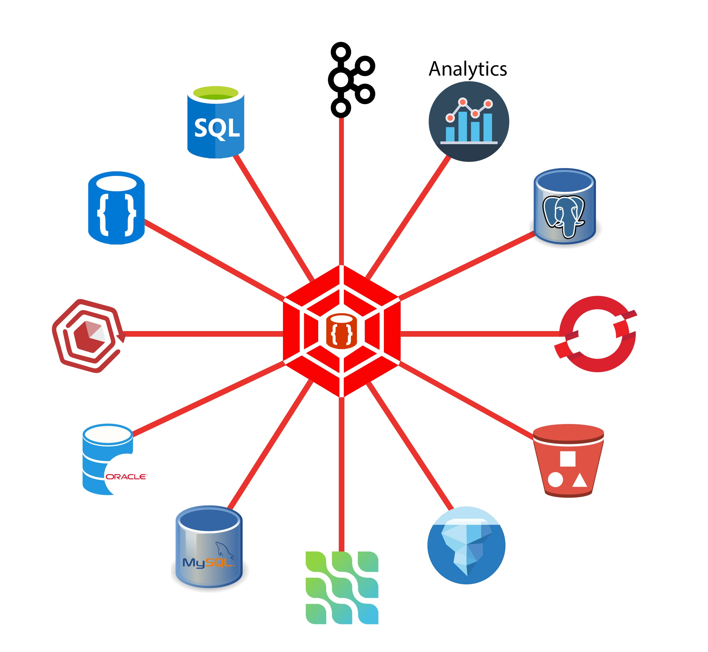
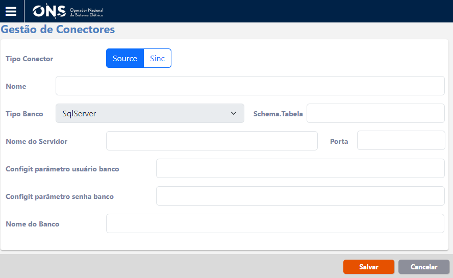
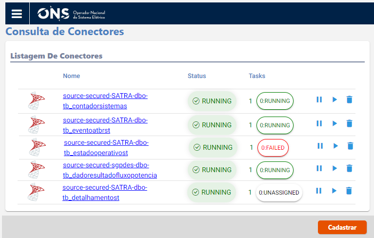
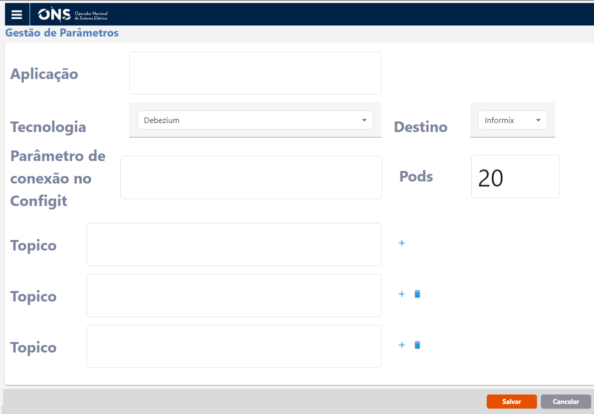
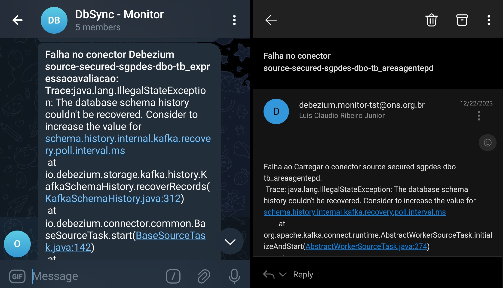
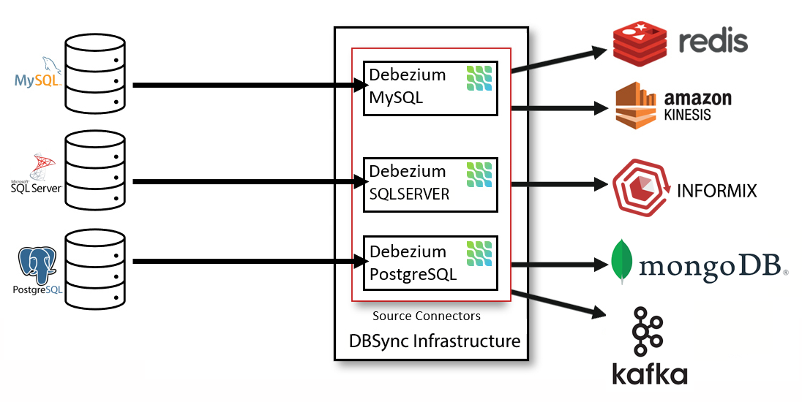

DBSync
Gerencie as replicações para suas bases de dados.
DBSync é uma plataforma distribuída para change data capture. Sincronize ações como insert, update e detele entre repositórios de dados, tais como Informix, SqlServer, Postgres, MongoDB, Mysql, MariaDB, Oracle, entre outros. Execute a carga inicial das suas tabelas diretamente da origem para o destino, passando apenas os comandos a serem executados. O DBSync possui uma interface amigável para gerenciamento, sendo construída sobre o Openshit e trazendo consigo o Debezium, tornando a plataforma ainda mais escalável e consistente.
Features atuais
Em DEV
Faça seu sistema reagir a eventos de atualizações de dados
Aproveite o poder do Kafka + DBSync para efetuar a leitura de tópicos específicos e tomar ações nos cenários de seu interesse.
Carga inicial
Inicie a primeira carga do sistema, levando dados da origem para o destino, usando uma interface amigável.
Low-code
Gerencie suas sincronizações via interface, usando pouco código somente para a carga inicial.
Suporte 24/7
A plataforma adota a observabilidade, envia alertas via Telegram, e-mail e outros. Está no sobreviso para dar suporte aos times.

Amplie o poder dos seus dados
Seus dados são alterados o tempo todo.
O DBSync habilita seus aplicativos a reagirem a cada
alteração de dados.
Com o monitoramento em tempo real dos dados, o DBSync transmite os dados
para o repositório de destino assim que a transação é confirmada.
Utilize a capacidade do CDC
integrado com o Kafka para realizar o decopling das suas aplicações, sem precisar alterar
nenhuma linha de código.
Reduza esforço de implementações
Como o DBSync tem a capacidade de escrever dados diretamente nas bases de dados de destino, você
não precisa se preocupar em manter a escrita dos dados nas suas aplicações.
Basta cadastrar as conexões com as bases de dados de origem e destino, que o DBSync faz o restante do trabalho.


Monitore o status de cada conector
Com a interface do DBSync interagindo com a API do DEBEZIUM, é possível monitorar o status de cada conector, bem como as suas definições, de forma protegida.
Caso seja necessária alguma manutenção, existe também a possibilidade de pausar e reiniciar a sincronização.
Caso exista alguma falha no conector, é possível saber qual é a falha clicando no status de falha.
Ganhe velocidade
Quando bem configurado, o DBSync é rápido. E isso significa que a entrega dos dados beira o tempo real. O DBSync usa o Kafka, que é comprovado, escalável e lida com grandes volumes de dados muito rapidamente. Além disso, usa a infraestrutura do Openshift, que pode ser escalada para persistir esses dados tão rapidamente quanto são lidos.


Evite a perda de dados
Mesmo em cenário de downtime das aplicações, o DBSync continua a sincronização exatamente de onde parou. Com a segurança da entrega dos dados via Kafka, cada cliente tem gravado exatamente o ultimo dado que foi lido e entregue, dando continuidade na entrega dos dados assim que os recursos voltam a ficar disponíveis. Além disso, a aplicação está coberta pelo sobreaviso e envia alertas de falhas via Telegram e e-mail.
Múltiplos conectores
Com o DBSync e seus conectores, é possível que os tipos de bases de dados do origem e destino sejam diferentes. Por exemplo, torna-se possível que os dados sejam de origem SqlServer e sejam escritos em um MongoDB, no destino. Como o DBSync usa o DEBEZIUM, o modelo de mensagem produzida fica no formato JSON, tornando simples a leitura e persistência dos dados.
